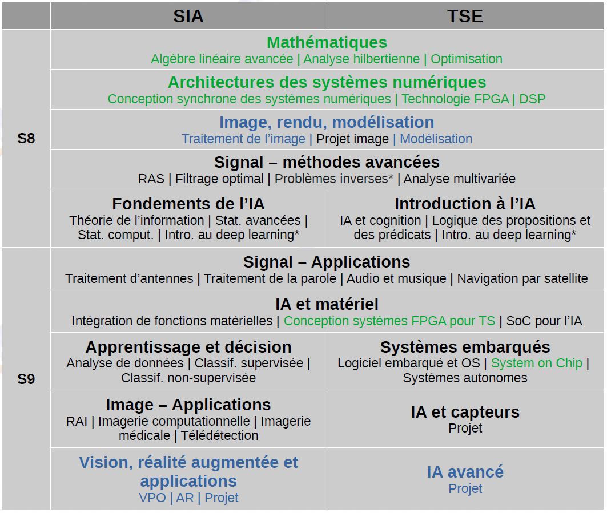

Signal & Communications Group
Institut de Recherche en Informatique de Toulouse (IRIT)
University of Toulouse, France

Menu:
Le parcours sera proposé aux étudiants de 2ième année au semestre 8 (février 2023).
Parcours "Intelligence Artificielle pour le Traitement de l'Information" (IATI)
Responsables : Nicolas Dobigeon (IRIT/INP-ENSEEIHT) et Blaise Mulliez (LAAS/INP-ENSEEIHT).
Contexte et objectifs
Le parcours de spécialité "Intelligence Artificielle pour le Traitemnent de l'Information" au sein du département électronique, énergie électrique & Automatique (EEEA) de l'INP-ENSEEIHT vise à former des ingénieurs spécialistes en intelligence artificielle et traitement de l'information experts en :
- modélisation et représentation,
- analyse et traitement,
- architectures et systèmes embarqués intelligents
capables de
- mettre en oeuvre des solutions existantes,
- les adapter et en développer des nouvelles,
- les implémenter sur cibles logicielles et/ou matérielles
dans un contexte applicatif donné. Les champs applicatifs visés par la formation concernent notamment :
- l'ingénierie bio-médicale : imagerie médicale (e.g., IRM, ultrasonore, TEP), EEG, ECG...
- la télédétection : imagerie optique (panchromatique, multispectrale et hyperspectrale), radar (e.g., SAR), polarimétrique...
- les objets connectés et la domotique
- la navigation et la localisation (e.g., Galileo, GPS)
- les transports : automobile (e.g., aide à la conduite), aviation (systèmes aéronautiques),...
- la surveillance et le diagnostic
Organisation de la formation
Ce parcours est proposé en priorité aux étudiants du département EEEA mais est aussi accessible aux étudiants des départements "Sciences du Numérique" et "Mécanique des Fluides Énergétique & Environnement" de l'INP-ENSEEIHT. Il se compose de deux sous-parcours :
- Signal, Image, Apprentissage (SIA)
- Dominante méthodologique et théorique
- Implémentation logicielle (Matlab, Python)
- Expertise en apprentissage automatique
- Applications en signal, image et vision
- Traitement du Signal Embarqué (TSE)
- Dominante pratique
- Implémentation matérielle (cibles numériques)
- Expertise en architectures pour l'IA
- Applications en signal
qui partagent des enseignements fondamentaux communs. L'organisation en unité d'enseignements est représentée sur la figure ci-dessous.
Documents disponibles :
- Présentation de la formation
- Maquette de la formation (version provisoire)
Stages et carrières
Les offres qui nous ont été directement adressées sont accessibles en ligne ici.
Noter que les sujets communiqués ci-dessus sont tels que proposés par les maîtres de stage. Cette liste n'est évidemment pas exhaustive, et est constituée simplement sur la base de propositions spontanées faites par les maîtres de stage. Les autres sources d'information sur les stages doivent impérativement être consultées, notamment les sites des grands groupes (CNES, Airbus...) ainsi que les plateformes telles que :
- le kiosque du GdR ISIS
- le kiosquedu GdR MADICS
- le portail d'emplois de IEEE Signal Processing Society
- le portail d'emplois de EURASIP
- le portail d'emplois /a> de IEEE Region 8<
- le groupe AEROCONTACT
- la plateforme PRAXIS
- la liste de IAPR
- la plateformePolytechnicPositions
- le site de l'équipe SC de l'IRIT
- le site de l'équipe SAMOVA de l'IRIT
Vous pouvez consulter également :
- la liste des stages effectués par les étudiants de l'ENSEEIHT
- la liste des stages effectués à l'étranger par les étudiants de l'ENSEEIHT
Vous pouvez aussi consulter les offres des années passées communiquées aux étudiants du parcours "Traitement du Signal et des Images", remplacé aujourd'hui par IATI-SIA.
(pour avoir un aperçu des propositions de stage faites en 2017-2018 : cliquer ici)
(pour avoir un aperçu des propositions de stage faites en 2016-2017 : cliquer ici)
(pour avoir un aperçu des propositions de stage faites en 2015-2016 : cliquer ici)
(pour avoir un aperçu des propositions de stage faites en 2014-2015 : cliquer ici)
(pour avoir un aperçu des propositions de stage faites en 2013-2014 : cliquer ici)
(pour avoir un aperçu des propositions de stage faites en 2012-2013 : cliquer ici)
(pour avoir un aperçu des propositions de stage faites en 2011-2012 : cliquer ici)
(pour avoir un aperçu des propositions de stage faites en 2010-2011 : cliquer ici)
(pour avoir un aperçu des propositions de stage faites en 2009-2010 : cliquer ici)
(pour avoir un aperçu des propositions de stage faites en 2008-2009 : cliquer ici)
(pour avoir un aperçu des propositions de stage faites en 2007-2008 : cliquer ici)
Consultez aussi les présentations sur les carrières en Traitement du Signal sur la chaîne Youtube de la IEEE Signal Processing Society.
|
What is Signal Processing? |
Signal Processing and Machine Learning |
Careers in Signal Processing